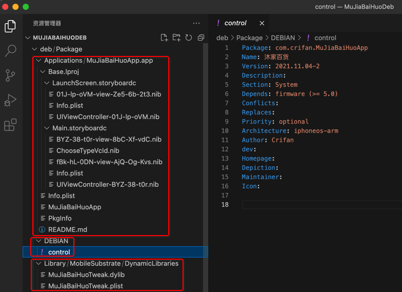

基本流程
TODO：
- 【已解决】XCode 13.1中Build Settings中Code Signing Identity没有Don’t Sign Code选项
- 【已解决】XCode中编译设置参数中如何新增User-Defined自定义参数
- 【已解决】XCode项目中新增iOSOpenDev的Package目录到Target目录中
把Xcode中iOS的app项目转换成iOSOpenDev的项目
把普通的XCode项目，去改造成iOSOpenDev的项目：
核心步骤：
只需参考官网教程：
Convert to iOSOpenDev Project · kokoabim/iOSOpenDev Wiki (github.com)
只是有几个细节，需要更新和补充：
最新XCode（13.1）中：Code Signing Identity没有Don’t Sign Code选项
解决办法：给PROJECT->Build Settings->User-Defined->增加参数：
CODE_SIGNING_ALLOWED=NO
详见：
- 【已解决】XCode 13.1中Build Settings中Code Signing Identity没有Don’t Sign Code选项
新版XCode中找不到新建User-Defined参数的入口
解决办法：选择PROJECT（和 或 TARGETS中的某个target）->Build Settings-》最顶部（和Basic、Customized、All、Combined所在的同）一行的最右边有个加号➕-》Add User-Defined Setting
详见：
- 【已解决】XCode中编译设置参数中如何新增User-Defined自定义参数
给Target的目录中新建Package
要点：选中自己项目的Target目录-》右键-》New Group
即可新建组=Group=子目录
详见：
- 【已解决】XCode项目中新增iOSOpenDev的Package目录到Target目录中
app和tweak之间的通信
对于iOSOpenDev的app，想要和tweak插件之间通信，主要是互相共享配置参数，此处是通过：配置文件
具体做法是：
app端
MuJiaBaiHuoApp的ViewController.m
写入配置：
- (void) saveConfig:(NSDictionary *) curCfgDict {
NSLog (@"curCfgDict=%@", curCfgDict);
NSString *curCfgFile = [[NSBundle mainBundle] objectForInfoDictionaryKey:@"MUJIABAIHUO_CONFIG_FILE"];
NSLog (@"curCfgFile=%@", curCfgFile);
NSString *curCfgFileUrl = [NSString stringWithFormat:@"file://%@", curCfgFile];
NSLog (@"curCfgFileUrl=%@", curCfgFileUrl);
NSURL *curCfgUrl = [NSURL URLWithString:curCfgFileUrl];
NSLog (@"curCfgUrl=%@", curCfgUrl);
NSError *writeErr = NULL;
BOOL isWriteOk = [curCfgDict writeToURL:curCfgUrl error:&writeErr];
NSLog(@"isWriteOk=%d", isWriteOk);
if (isWriteOk == NO){
NSLog(@"writeErr=%@", writeErr);
}
}
到对应的配置文件：
/var/mobile/Library/Preferences/MuJiaBaiHuo.plist
注：
MUJIABAIHUO_CONFIG_FILE是加的User-Defined的参数- 且：同时加
MUJIABAIHUO_CONFIG_FILE=$(MUJIABAIHUO_CONFIG_FILE)到info.plist，才生效
- 且：同时加

tweak端
MuJiaBaiHuoTweak的MuJiaBaiHuoTweak.xm
const NSString *CONFIG_FILE = @"/var/mobile/Library/Preferences/MuJiaBaiHuo.plist";
- (NSString *)model
{
os_log(OS_LOG_DEFAULT, "MuJiaBaiHuoTweak hook UIDevice model");
NSString* hookedModel = @"Tweaked_model";
NSDictionary *curCfgDict = [[NSDictionary alloc] initWithContentsOfFile:(NSString *)CONFIG_FILE];
os_log(OS_LOG_DEFAULT, "MuJiaBaiHuoTweak curCfgDict=%{public}@", curCfgDict);
if (curCfgDict) {
NSString* phoneIdStr = [curCfgDict objectForKey:@"phoneId"];
os_log(OS_LOG_DEFAULT, "MuJiaBaiHuoTweak phoneIdStr=%{public}@", phoneIdStr);
hookedModel = phoneIdStr;
os_log(OS_LOG_DEFAULT, "MuJiaBaiHuoTweak hookedModel=%{public}@", hookedModel);
}
os_log(OS_LOG_DEFAULT, "MuJiaBaiHuoTweak return hookedModel=%{public}@", hookedModel);
return hookedModel;
}
即可：
从配置文件中
/var/mobile/Library/Preferences/MuJiaBaiHuo.plist
读取出之前保存的NSDictionary，获取到参数phoneId的值。
把tweak和app合并成单个deb文件
此处把：
- tweak：的Package包中的Library文件夹
- 去掉DEBIAN目录
- 中的control
- 无需tweak的control
- 中的control
- 去掉DEBIAN目录
- app：的Package的目录中的所有内容
- Applications
- DEBIAN
- control
- 需要app的control文件
- control
合并到一起后的效果：

对应的目录结构：
➜ MuJiaBaiHuoDeb tree deb/Package
deb/Package
├── Applications
│ └── MuJiaBaiHuoApp.app
│ ├── Base.lproj
│ │ ├── LaunchScreen.storyboardc
│ │ │ ├── 01J-lp-oVM-view-Ze5-6b-2t3.nib
│ │ │ ├── Info.plist
│ │ │ └── UIViewController-01J-lp-oVM.nib
│ │ └── Main.storyboardc
│ │ ├── BYZ-38-t0r-view-8bC-Xf-vdC.nib
│ │ ├── ChooseTypeVcId.nib
│ │ ├── Info.plist
│ │ ├── UIViewController-BYZ-38-t0r.nib
│ │ └── fBk-hL-0DN-view-AjQ-Og-Kvs.nib
│ ├── Info.plist
│ ├── MuJiaBaiHuoApp
│ ├── PkgInfo
│ └── README.md
├── DEBIAN
│ └── control
└── Library
└── MobileSubstrate
└── DynamicLibraries
├── MuJiaBaiHuoTweak.dylib
└── MuJiaBaiHuoTweak.plist
9 directories, 15 files
Finder中的效果：
- Applications
- DEBIAN
- Library

关于目录中的各个文件的详细解释：
Package：要打包的根目录ApplicationsMuJiaBaiHuoApp.app- 拷贝自：iOS的app的XCode项目下的LatestBuild
- LatestBuild中保存了每次最新编译之后的版本
- LatestBuild中保存了每次最新编译之后的版本
- 拷贝自：iOS的app的XCode项目下的LatestBuild
DEBIANcontrol- 用的是：iOS的app的Package/DEBIAN/control，不是iOS的tweak的Package/DEBIAN/control
- 用的是：iOS的app的Package/DEBIAN/control，不是iOS的tweak的Package/DEBIAN/control
LibraryMobileSubstrateDynamicLibrariesMuJiaBaiHuoTweak.dylib- 拷贝自：iOS的tweak的XCode项目下的LatestBuild
- LatestBuild中保存了每次最新编译之后的版本
- LatestBuild中保存了每次最新编译之后的版本
- 拷贝自：iOS的tweak的XCode项目下的LatestBuild
MuJiaBaiHuoTweak.plist- 拷贝自iOS的tweak中的
Library/MobileSubstrate/DynamicLibraries
- 拷贝自iOS的tweak中的

然后写个shell脚本：
buildPackage.sh
#!/bin/bash
find ./Package -name ".DS_Store" -depth -exec rm {} \;
dpkg-deb -Zgzip -b Package MuJiaBaiHuo.deb
- 注：其实核心就一句：
dpkg-deb -Zgzip -b Package MuJiaBaiHuo.deb
去加上可执行权限：
chmod +x ./buildPackage.sh
运行脚本去打包出deb
./buildPackage.sh
- log输出举例
➜ 20220302 pwd /Users/crifan/dev/DevRoot/zry/MuJiaBaiHuo/MuJiaBaiHuoDeb/20220302 ➜ 20220302 ../buildPackage.sh dpkg-deb: 正在 'MuJiaBaiHuo.deb' 中构建软件包 'com.crifan.mujiabaihuoapp'。
即可得到deb插件安装包：MuJiaBaiHuo.deb
注：
- 如何安装
- 通过
Filza或命令行dpkg（命令是dpkg -i filename.deb）去安装deb文件，即可安装到iPhone中。
- 通过